| デッドマンズ吉良 | 15 | 5 | 5 | 0 | 幽霊 | ・屋敷幽霊にいるぞ。 | 0.14 |
 | デッドマンズ吉良 | 30 | 5 | 5 | 0 | 幽霊 | ・既に死んでいるぞ。
・眺めの良い部屋をさがしてるぞ。
「いったいなんでまた
鼻なんかなくしちまったんだ？」 | 共通追加 |
| 玉美 | 50 | 0 | 1 | 1 | 人間
杜王町住人 | ・攻撃すると罪悪感でお金を奪われるぞ。
・すれ違っただけでもお金を奪われるぞ。
・お金がないと体が重くなってしまうぞ。
・攻撃・すれ違いで所持金を奪う（500G超なら半額）
・所持金が無いと鈍足にされる | 0.13 |
 | エコーズの卵 | 1 | 0 | 0 | 2 | スタンド
杜王町住人 | ・動かないぞ。
・攻撃してこないぞ。
・倒すと成長することがあるぞ。
・模様の違う卵には要注意だ。
・倒すとエコーズACT1に成長することがある | 0.13 |
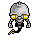 | エコーズACT1 | 12 | 7 | 5 | 13 | スタンド
杜王町住人 | ・音を貼り付けて混乱させてくるぞ。
・倒すと成長することがあるぞ。
・命中するたび約1/5で混乱させる
・倒すと約1/8でさなぎになる | 0.13 |
 | ACT1のさなぎ | 1 | 0 | 0 | 1 | スタンド
杜王町住人 | ・動かないぞ。
・攻撃もしないぞ。
・エコーズACT2に成長するぞ。
・約1/5でふ化してACT2になる（HP25） | 0.13 |
 | エコーズACT2 | 19 | 9 | 6 | 46 | スタンド
杜王町住人 | ・文字を投げつけて攻撃してくるぞ。
・地面に文字の罠を貼り付けるぞ。
・倒すと成長することがあるぞ。
・弾は次のいずれか:
・「ドジュウ」（食料が焦げる）
・「ドッグォン」（瞬間移動）
・「バグォ」（ダメージ）
・約1/4で文字の罠を貼る
・倒すと約1/8でさなぎになる | 0.13 |
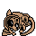 | ACT2のさなぎ | 1 | 0 | 0 | 1 | スタンド
杜王町住人 | ・動かないぞ。
・攻撃もしないぞ。
・エコーズACT3に成長するぞ。
・約1/5でふ化してACT3になる（HP45） | 0.13 |
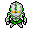 | エコーズACT3 | 25 | 11 | 7 | 100 | スタンド
杜王町住人 | ・体を重くして鈍足にしてくるぞ。
・命中するたび約1/3で鈍足にする
・メイド・イン・ヘブンの装備で鈍足を防げる | 0.13 |
 | ジョセフ | 6 | 1 | 2 | 3 | 人間
杜王町住人
ジョースター | ・フラフラと歩くぞ。
・攻撃してこないぞ。
・多分ボケちゃっているぞ。
・吹き飛ばされて水に落ちても、水の上に立っていられるぞ。
(0.16 ~) | 0.13 |
 | ハーヴェスト | 12 | 12 | 8 | 30 | スタンド
杜王町住人 | ・アイテムを盗んで逃げるぞ。
・落ちているアイテムも拾って逃げるぞ。
・盗んだ後は倍の速さで移動するぞ。
・盗みは約1/3で失敗
・装備DISCの効果で盗まれない
・盗んだ後は倍速 | 0.13 |
 | ハイウェイスター | 14 | 7 | 5 | 48 | スタンド
杜王町住人 | ・倍の速さで移動するぞ。
・養分を吸い取って満腹度を下げてくるぞ。
・特別なアイテムを持っていることがあるぞ。
・命中するたび約1/4で満腹度-10
・ドリップを持っていることがある | 0.13 |
 | ストレイ・キャット | 45 | 15 | 15 | 100 | 動物
杜王町住人 | ・金縛りにする空気弾を撃ってくるぞ。
・撃った後は寝てしまうぞ。
・既に金縛りだとダメージ弾になるぞ。
・吉良が近くにいると爆弾空気弾になるぞ。
・空気弾で固定にする。撃った後は6ターン眠る
・固定済みならダメージ弾になる
・近くに吉良がいると爆弾空気弾になる
・動かない | 0.13 |
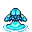 | アクア・ネックレス | 26 | 14 | 13 | 120 | スタンド
杜王町住人 | ・霧になって他の場所へ瞬間移動するぞ。
・念写に写りこんでしまう事があるぞ。
・瞬間移動は約1/3、念写に写るのは約1/2
・念写に写った個体を倒すと、念写したヤツだったと表示される
・熱湯を浴びると蒸発して透明になる | 0.13 |
 | 由花子 | 32 | 12 | 13 | 142 | 人間
杜王町住人 | ・スタンドDISCに呪縛をかけてくるぞ。
・隣接攻撃でスタンドDISCを呪縛する
・漆黒のオーラで防げる | 0.13 |
 | 億泰 | 36 | 17 | 14 | 170 | 人間
杜王町住人 | ・ガオンと近くに引き寄せてくるぞ。
・強烈な一撃を繰り出すことがあるぞ。
・離れた位置から引き寄せる
・1/4で強烈な一撃 | 0.13 |
 | アンジェロ | 40 | 18 | 15 | 240 | 人間 | ・のんびりとチャンスが来るのを待っているぞ。
・スタンドを飲み込ませてくるぞ。
・雨が降るとパワーアップするぞ。 | 0.16 |
| 康一 | 30 | 16 | 16 | 280 | 人間
杜王町住人 | ・付かず離れず距離をとってくるぞ。
・３種類のエコーズを呼び出すぞ。
・隣接すると重くなる攻撃をしてくるぞ。
・隣接攻撃で鈍足にする。装備スタンドで防げる
・1/4でエコーズACT1〜3のどれかを呼ぶ | 0.13 |
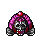 | シアーハートアタック | 5 | 14 | 40 | 300 | スタンド
杜王町住人 | ・体力が少なくなると爆発するぞ。
・自分が爆発に巻き込まれると誘爆するぞ。
・HPが1以下で爆発
・HP2で隣接すると「カチリ」と警告
・爆発に巻き込まれると誘爆 | 0.13 |
 | 仗助 | 42 | 20 | 18 | 380 | 人間
杜王町住人
ジョースター | ・近くに怪我をした敵がいると治しに行くぞ。
・HP60%未満の仲間を3マス以内で治す（回復50）
・状態異常も治すぞ。
(0.16 ~) | 0.13 |
 | レッドホットチリペッパー | 52 | 20 | 16 | 630 | スタンド
杜王町住人 | ・地下の電線を使って近くに瞬間移動するぞ。
・２回連続で攻撃してくるぞ。
・水に入るとダメージを受けるぞ。
・タイヤに弱いぞ。
・1/3で電線を伝い瞬間移動
・水に入ると溶けてダメージを受ける
・トラクタータイヤの直撃で倒せる（999ダメージ）
・攻撃を受けると怒り、攻撃力が2ずつ上がる（上限49）
・倒すと聖なる矢を落とす | 0.13 |
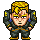 | 虹村形兆 | 55 | 10 | 18 | 700 | 人間
杜王町住人 | ・付かず離れず距離をとるぞ。
・バッドカンパニー部隊を呼び出すぞ。
・グリーンベレーを呼び出すぞ。
・地面に地雷を仕掛けるぞ。
・1/8の確率で足元にバッドカンパニーの罠を仕掛ける
・1/6で部屋内に最大7体の部隊を呼ぶ（隣接時は使わない）
・隣接時にグリーンベレーを呼ぶことがある
・自分は攻撃しない | 0.13 |
 | バッドカンパニー | 20 | 10 | 5 | 5 | スタンド
杜王町住人 | ・形兆が呼び出したスタンドだ。
・弾丸を発射してくるぞ。
・仲間の弾丸には当たらないぞ。
・弾は他のバッド・カンパニー・アパッチ・グリーンベレー・形兆に当たらない | 0.13 |
 | バッドカンパニー戦車 | 30 | 14 | 13 | 7 | スタンド
杜王町住人 | ・形兆が呼び出したスタンドだ。
・砲弾を発射してくるぞ。
・仲間の弾丸には当たらないぞ。
・砲弾は他のバッド・カンパニー・アパッチ・グリーンベレー・形兆に当たらない | 0.13 |
 | アパッチ | 30 | 16 | 10 | 8 | スタンド
杜王町住人 | ・形兆が呼び出したスタンドだ。
・ミサイルを発射してくるぞ。
・仲間の弾丸には当たらないぞ。
・ミサイルは他のバッド・カンパニーの兵隊に当たらず素通りする
・吹き飛ばされて水に落ちても、水の上に立っていられるぞ。
(0.16 ~) | 0.13 |
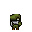 | グリーンベレー | 20 | 20 | 5 | 10 | スタンド
杜王町住人 | ・形兆が呼び出したスタンドだ。
・仲間の弾丸には当たらないぞ。
・仲間の弾には当たらない | 0.13 |
 | 吉良吉影 | 65 | 22 | 20 | 750 | 人間
杜王町住人 | ・アイテムを爆弾に変えてくるぞ。
・床のアイテムも爆弾に変えることがあるぞ。
・シアーハートアタックを繰り出すことがあるぞ。
・所持アイテムや床のアイテムを爆弾に変える
・シアハートアタックを呼ぶことがある
・倒すと吉良の財布を落とす | 0.13 |
 | トニオさん | 950 | 100 | 40 | 1000 | 人間
杜王町住人 | ・お店を守っているぞ。
・攻撃を受けると怒るぞ。
・泥棒すると仲間を呼ぶぞ。
・店の中にプレイヤーがいる間だけ動く。殴ってこない
・代金未払いの品（持ち物・店の外の床の商品・使ってしまった分の代金）があると、出入口の正面に立ちふさがる
・怒る条件1: プレイヤーの殴り・投げ・射撃などでダメージを受け、倒されずに生き残ったとき
・怒る条件2: 吹き飛ばし（ノーベンバー・レインなど）を受けたとき
・怒る条件3（泥棒）: 代金未払いの品を持ったまま店の外に出たとき（ザ・ハンドで店の外へ引き寄せられた場合も同じ）。階のどこかに、プレイヤーから 8 マス以上離れて億泰か仗助が 12 体湧く
・怒ると眠り・固定・氷漬けが解け、トニオさん（怒り）に変わる。階が変わるまで元には戻らない。一度怒ったあとは泥棒騒ぎは起きない
・店主が倒されている階では、持ち出しても咎められない | 0.13 |
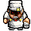 | トニオさん | 950 | 100 | 40 | 1000 | 人間
杜王町住人 | ・「タダじゃあおきマセンッ！」 | 0.13 |
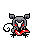 | 虫食いでない | 10 | 34 | 1 | 1000 | 動物
杜王町住人 | ・近づくと毒針を発射してくるぞ。
・刺さるとスタンドが溶けて弱まるぞ。
・オーラで強くなっているとオーラが消えるぞ。
・移動しないぞ。
・射程2で毒針を撃ち、スタンドを溶かす
・オーラも消す
・動かない | 0.13 |
 | 虫喰い | 10 | 34 | 1 | 1500 | 動物
杜王町住人 | ・毒針を発射してくるぞ。
・刺さるとスタンドが溶けて弱まるぞ。
・オーラで強くなっているとオーラが消えるぞ。
・すばやく動いているぞ。
・毒針でスタンドを溶かし、オーラも消す
・2倍速で動く | 0.13 |
 | 康一act2!! | 40 | 30 | 22 | 1600 | 人間
杜王町住人 | ・３種類のエコーズを呼び出すぞ。
・杜王町の仲間を呼び出すぞ。
・隣接すると重くなる攻撃をしてくるぞ。
・隣接攻撃で鈍足にする。装備スタンドで防げる
・離れていると仲間（ジョセフ・承太郎・由花子・億泰・仗助）を呼ぶことがある
・エコーズACT1〜3も呼ぶ | 0.13 |
 | 川尻浩作 | 50 | 32 | 22 | 1700 | 人間
杜王町住人 | ・他人のお金を盗むぞ。
・なんてロマンチックなの……
・攻撃の代わりに所持金を10G以上盗む
・所持金を持つと1ターン休むことがある
・聖なる矢を受けると吉良吉影に変身する
・0.16・+αは髪の毛を爆弾に変え、次ターンに爆発（10ダメージ）
・髪の毛を爆弾に変えてくるぞ。
(0.16 ~)
・髪の毛を爆弾に変えてくるぞ。
(+α ~) | 0.13 |
 | 成長した吉良 | 65 | 58 | 33 | 3300 | 人間
杜王町住人 | ・アイテムを爆弾にしてくるぞ。
・落ちているアイテムも爆弾に変えるぞ。
・仲間を呼び出すぞ。
・瀕死になると第3の爆弾を使うぞ。
・約1/4で野良猫を呼ぶ（射程4）
・攻撃のたび約1/6で写真の父を呼ぶ・約1/6で爆弾化
・HP10以下で攻撃を受けるとバイツァ・ダスト（爆風ダメージあり） | 0.13 |
| 吉良の親父 | 22 | 13 | 9 | 95 | 幽霊
杜王町住人 | ・フワフワと動いているぞ。
・親父がいる部屋は写真の中だ。
倒さないと出られないぞ。
・弓矢を落とすことがあるぞ。
・倒すまで部屋から出られない
・キラークイーン・シアハートアタック・バイツァダストの装備中は出られる
・聖なる矢を落とす | 0.13 |
 | プッツン由花子 | 45 | 26 | 21 | 1700 | 人間
杜王町住人 | ・髪の毛を飛ばしてくるぞ。
・刺さると思うように動けなくなるぞ。
・スタンドDISCに呪縛をかけてくるぞ。
・髪の毛が刺さると混乱し、混乱中は弾を撃ってこない
・スタンドDISCへの呪縛は命中するたび約1/4
・装備DISCの効果で混乱を防げる | 0.13 |
 | 承太郎 | 60 | 33 | 23 | 1800 | 人間
ジョースター | ・ちょっとだけ時間を止めるぞ。
・特定のアイテムを落とすぞ。
・時止めは約1/4・射程6・4ターン
・タイムブックを落とす | 0.13 |
 | ブチ切れた仗助 | 60 | 32 | 23 | 1900 | 人間
杜王町住人
ジョースター | ・倍の速さで移動するぞ。
・２回連続で攻撃するぞ。
・倍速で動く
・問題なく治してくるぞ。
(0.16 ~) | 0.13 |
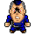 | ブチ切れた億泰 | 70 | 38 | 25 | 2000 | 人間
杜王町住人 | ・ガオンと近くに引き寄せてくるぞ。
・強烈な一撃を繰り出すことがあるぞ。
・塔の上では動かない
・約1/4で強烈な一撃 | 0.13 |
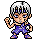 | 昇り調子の大柳賢 | 55 | 25 | 24 | 2800 | 人間 | ・ジャンケン勝負を仕掛けてくるぞ。
・ヘブンズ・ドアーの右手で色々書き換えるぞ。
・強運でヒラリと攻撃をかわすぞ。
・1/3でジャンケンを仕掛ける
・負けると精神力・DISCの強さを奪われ、勝つと取り返せる（奪取・敗北とも最大3回） | 0.15 |
 | 辻彩 | 70 | 1 | 1 | 3500 | 人間 | ・エステ「シンデレラ」を営業しているぞ。
・火曜定休だぞ。
・駅より徒歩2分だぞ。 | 0.15 |